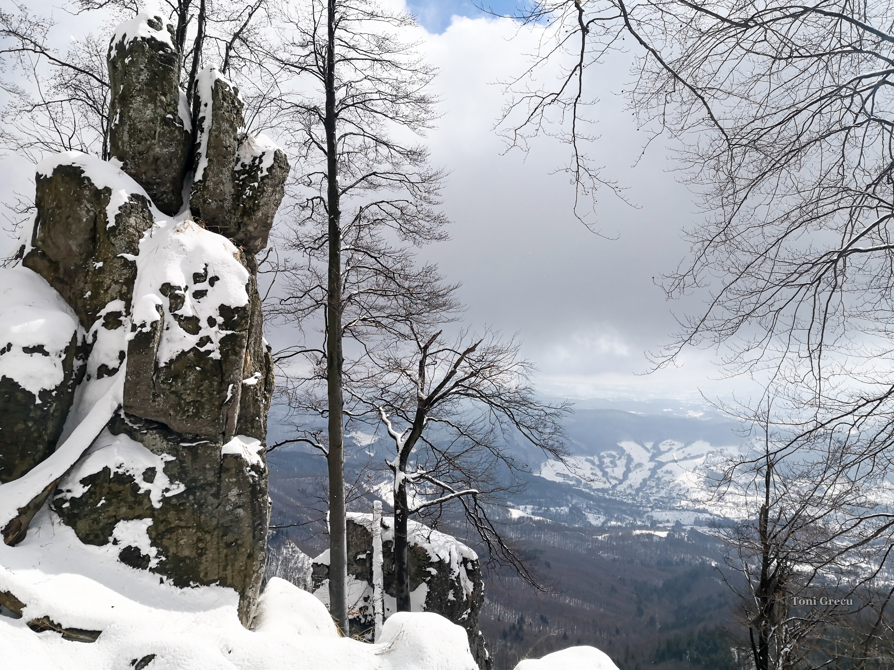
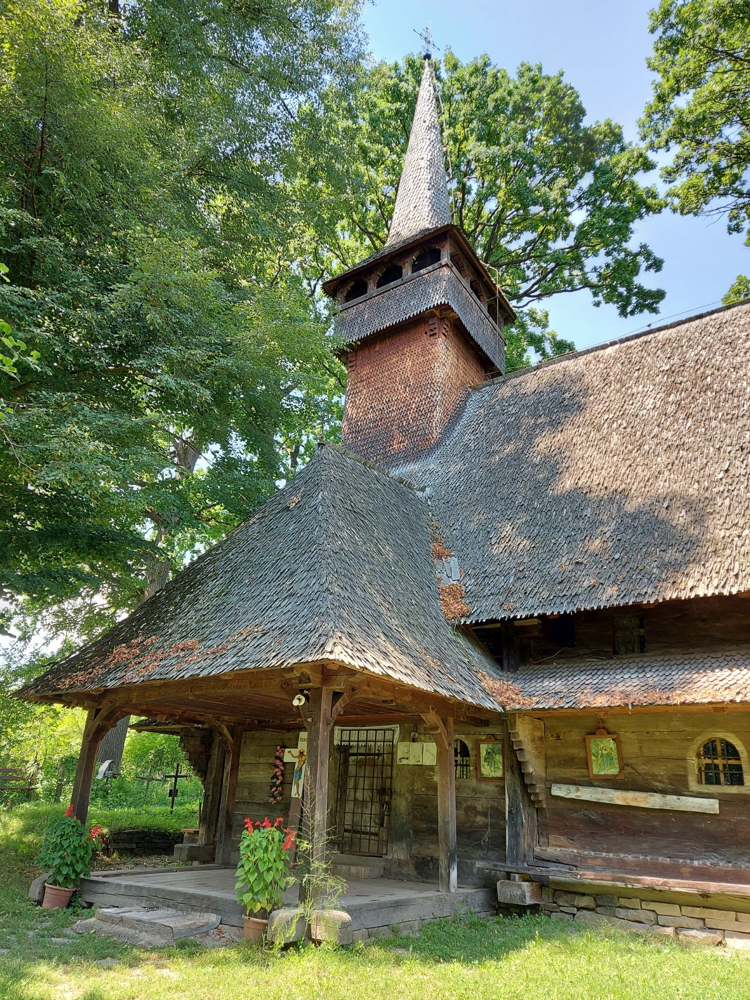
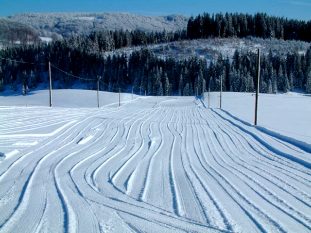
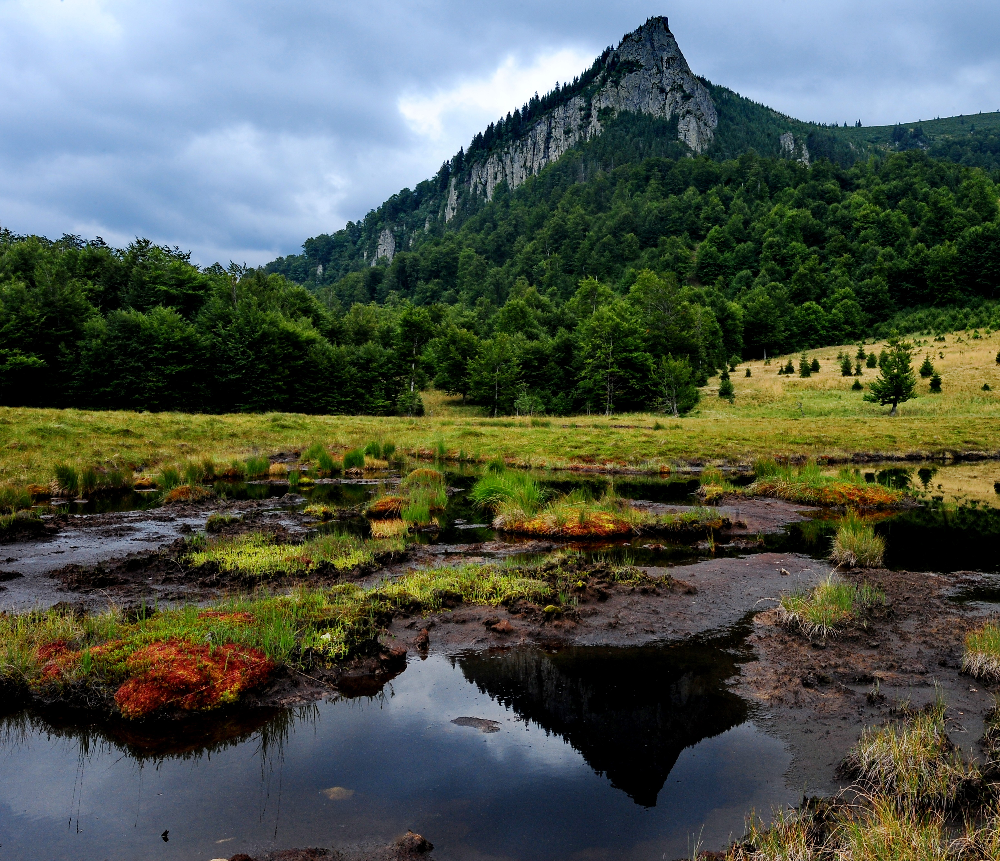

Sights and Attractions
Reaching Desești and limiting yourself to just this locality would be a great loss. The area is surrounded by a multitude of natural and cultural treasures waiting to be discovered by curious tourists eager for authentic experiences. Among them are:
Tătarului Gorges
Tătarului Gorges is a hydro-geological natural reserve (15 hectares) located 30 km from Baia Mare. They stretch for several hundred meters, being the only andesite gorges in the country. Tătarului Gorges represent a unique gorge that carves through high rocks, giving it a wild and picturesque appearance.

Image source: Link
Igniș Peak
Igniș Peak is an ideal destination for nature enthusiasts, offering activities such as hiking, photography, trout fishing in valleys, cycling, and paragliding. The area is a biodiversity treasure trove for naturalists—natural reserves like Iezerul Mare, Poiana Brazilor Swamp, and Tăul lui Dumitru host relic glacial species. Explorers may encounter black vipers and, if lucky, witness the majestic flight of mountain vultures soaring in the clear sky. Additionally, the region provides opportunities to observe buffaloes and horses.

Image source: Link
The Wooden Church of Desești
The wooden church, 'Cuvioasa Paraschiva,' in Desești was built around the year 1780. It represents a Maramureș example of post-Byzantine mural art and is included in the UNESCO World Heritage List.

Image source: Link
The Wooden Church of Hărnicești
The wooden church in Hărnicești, Desești commune, Maramureș County, is listed as a historical monument. Dedicated to the 'Birth of the Virgin Mary,' the church is located on the ruins of an old monastery. The wooden church 'Nașterea Maicii Domnului' has a rich history and unique architectural features. Its rectangular plan has undergone several architectural modifications over time, resulting in its current appearance. Some sources suggest it was built in 1700, while others propose 1728 or 1770.

Image source: Link
The Ski Slope 'Poiana Soarelui'
The ski slope 'Poiana Soarelui' has a low difficulty level, with a length of 365 m and a vertical drop of 50 m, and is equipped with nighttime lighting but not artificial snow. The starting altitude is 1,025 m, and the finishing point is at 950 m.

Image source: Link
The Natural Reserve 'Mlaştina Iezerul Mare'
The Iezerul Mare Swamp (Hărniceștilor Bog) is a nationally protected area in Maramureș County. It falls under the IUCN category IV, designating it as a floristic and faunistic natural reserve, covering 5 hectares. Situated at an altitude of 1,014 meters, it is located near the village of Hărnicești, along the national road DN18 that connects Baia Mare to Sighetu Marmației. The natural reserve was established and protected in 2000 and overlaps with the Natura 2000 site - Igniș.

Image source: Link
The Protected Area 'Creasta Cocoșului and Tăul la Gutâi'
Creasta Cocoșului is a natural formation composed of andesite, a prominent type of volcanic rock, located in the Gutâi Mountains in the Maramureș region of the Eastern Carpathians in Romania. It is the second-highest peak in the Gutâi Mountains, drawing attention for its unique and captivating shape.
Tăul Chendroaiei, also known as Tăul de la Gutâi, is a lake situated beneath Creasta Cocoșului on the northern slope of the Gutâi Mountains. Meadows and the edge of the forest surround the marshy area. The site features a lake. Tăul Chendroaiei is known for its picturesque landscape. The steep rocks of Creasta Cocoșului are reflected in the lake's waters, making it a photogenic location. The area has excellent potential for photography, thanks to its scenic landscapes, steep rocks and diverse flora and fauna.

Image source: Link
Possible Trails for Mountain Enthusiasts
Cheile Tătarului – Vlășchinescu
Cabana Runcu-Piesca, sub culmea Pleșca Mare și cheile Tătarului
Pasul Paltin, Izvorul lui Pintea, vârful Gutâiul Mare (pe poteca, 5-6 ore)
Izvoare – Pleșca – Cheile Tătarului – Baraj Runcu – Mara

Map of the main attractions to visit in the Desești area.